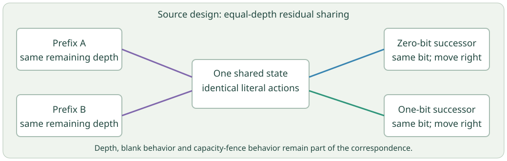

Representation analysis
A manual lower bound for the old expanded evidence, with an explicit map of where complete values, event occurrences and provenance would belong in a proposed successor.
· Source and saved-metadata milestone
The agents have produced complementary, inspectable results: a conditional lower bound rules out storage sharing as a repair for the old evidence gate; a shared-budget writer is drafted; and a fixed lexical routine shares repeated decisions. Independent review caught a writer bug and an overstatement about the lexical routine; separately preserved successors address both.
This milestone used Source inspection, manual arguments, AST checks, unused compilation and passive complete saved metadata. No subject, compiler, checker, simulator, fixture, sizing or search call was made. All old grants remain retired; no new grant was issued. The writer and lexical routine are unexecuted and unintegrated.
A manual lower bound for the old expanded evidence, with an explicit map of where complete values, event occurrences and provenance would belong in a proposed successor.
A cooperative physical/expanded byte ledger and writer, plus a separate declarative diagnostic bank. Negative-summary capacity is reserved before bulk output.
Review of the evidence contract, the bound, the writer and the lexical routine. Rejected claims and their corrections remain in the archive.
Recover the pinned physical-checker Sources, implement residual sharing for one lexical routine, keep authority and scope distinct, and assemble this report.
Parallel Source work is useful here because the tasks have separate artifacts and review obligations. A reviewer’s pass does not authorize an experiment or establish a proof-search advantage. Future measured experiments still need an exact reviewed subject and isolated execution.
The previous run stopped while writing its canonical packet. The unchanged evidence gate, called \(G_0\) here, charges both stored bytes and the full literal expansion of repeated return fields. Keeping references on disk does not remove that logical charge.
From pinned Source and the complete negative record, the independent review supports the following manual bound. There were \(31\,904\) completed selected receipts in successful profile scopes. Each has disjoint mandatory typed tile/marking subtrees of at least \(338\) ASCII bytes. Subtracting a deliberately generous \(2048\)-byte overhead for every one of the \(345\) started scopes gives
\[D\ge31\,904\cdot338-345\cdot2048=10\,076\,992\ \mathrm{bytes}.\]The canonical partial is used only for its raw file length, \(124\,780\,541\) bytes. Under the stated fresh exclusive writer and no-deletion/no-truncation assumptions, a completed packet would be at least that long. Thus the old expansion would satisfy
\[E\ge124\,780\,541+D=134\,857\,533>134\,217\,728\ \mathrm{bytes}.\]The lower bound exceeds the original \(128\,\mathrm{MiB}\) limit by \(639\,805\) bytes, before further ignored positive terms. This is a conditional negative resource argument, not an exact packet size, a new run or an admission of any query answer. The reviewer checked the Source/counter join that places those selected receipts in completed scopes.
The independent bound review recorded \(47\) checks with no failed checks. Its complete assumptions and manual findings are linked below.
The proposed \(G_1\) would give each full typed value and event one canonical owner, with references for repeated views. Every event occurrence, order, original input, independent domain check, mutation journal, solution and diagnostic variant must remain available. A summary or hash cannot replace those values.
Changing what counts as the logical expansion changes the gate, even if all information is retained. The old rejection remains a rejection under \(G_0\). The ownership map is an unimplemented proposal: \(G_1\) has not been adopted, no complete stored/expanded fitting bound has been established, and no successor invocation is authorized. The numeric caps and whole case banks remain unchanged.
A complete canonical typed binary representation is also a candidate for later analysis. The existing checker codec does not automatically preserve all tuple/list and order-sensitive evidence data. No such evidence encoder is implemented or sized here.
The new Source draft uses one cooperative ledger for all file allocations. It reserves the existing outer metadata allowance, bounded log and header slots, and a small negative-summary slot inside the original physical limit before bulk output. Failed files retain their byte charge and unused lease; successful files release only unused reserved capacity after closure and a metadata census.
The draft preserves primary and secondary exception objects, uses bounded unbuffered chunks, and checks deadlines and custody through output completion. A separately reserved negative summary cannot turn an incomplete output into an accepted result. Its reservation does not guarantee filesystem availability or survival past parent termination.
The successor retains every original recipe and adds short-header and mutation controls, giving \(49\) diagnostic groups with \(70\) declarative variants, separating pure metadata cases from filesystem-operation recipes. None has run. This component is not an operating-system quota or a semantic evidence checker: it assumes exclusive cooperative ownership, and Root must independently establish that every expanded charge is honest.
The first draft retained a fixed file’s full reservation after it completed, then incorrectly required a later census to find that many actual bytes. A valid short header followed by another record or a reserved negative summary would therefore be rejected.
The separately named successor records the actual completed size and identity, checks later censuses against that snapshot, and retains the original capacity reservation. It preserves mutation checks. The negative review, original Source and exact patch remain archived. The successor is still unexecuted.
The Source and the API, assumptions, unrun bank and independent review are archived. No whole-worker integration, runtime qualification or fitting claim follows.
The intended single proof tile set still needs a complete physical interpreter for its fixed proof checker. One obstacle in the old physical foundation is a lexical routine with seven full byte-decision trees. The new routine merges equal-depth residual decisions with identical literal successors and blank/fence behavior.

| Source quantity | Manual bound or scope |
|---|---|
| Old unshared lexical working states | \(1785\), from seven full byte trees |
| New lexical working states | At most \(314\), by a manual residual-subtree bound |
| New total states, including exits | At most \(317\) |
| New literal transitions | At most \(1256\), with \(12\) undefined halt slots |
| Generated tables, simulations and runtime trials | None |
These are Source upper bounds for one routine, not a generated census, speedup, whole-interpreter count or Wang-palette fit. The new alphabet and band scaffolding are not linked into the old physical foundation. Each ordinary transition reads one bit, writes it unchanged and moves right; it does not invoke a host decoder.
My first contract overstated correspondence to the old routine. On a blank encountered inside an incomplete byte, the old microprogram has an undefined/stuck transition; the new routine explicitly returns a rejection exit. Exact partial terminal trajectories therefore differ.
The corrected contract claims equality to the unreduced new lexical specification and preservation of the old accepted-word language when old stuck/undefined behavior is interpreted as nonaccepting. It makes no claim about equal old physical scan trajectories, head positions or step costs. Source bytes did not change; the scope claim and prospective diagnostics were corrected. The negative review and successor review are both retained.
The successor Source review recorded \(18\) checks with no failed checks. That is independent static review, not machine-checked semantic equivalence or execution.
The prospective bank declares \(1792\) mode/byte cases, \(1785\) fence-prefix cases, \(7\) root-blank cases, \(1778\) mid-byte blank cases and \(16\) word controls, plus fault and quota diagnostics. These are unexecuted recipes, not passed tests.
For actual previously emitted tiles, see the saved checker-image initialization tiles and their human reading. The new routine has produced no tiles. The full image/BOOT parser, register/heap/frame controller, thirteen-opcode linkage, public-target binding and physical-to-host checker correspondence remain open.
The concrete contribution is a better-founded next design: the old gate has a reviewed incompatibility bound; the proposed replacement is identified honestly as a changed certificate; and one physical-checker routine has a smaller manual Source bound. These remove specific uncertainties. They do not yet show automated theorem discovery or a benefit from GCTS or RL.
The main scientific tests remain practical unmarked Turtle tiling on \(A_2\), certified failure markings that actually remove candidates, unrestricted validated RL cluster proposals, multiscale receptor/lemma families, exact Penrose work, and automatically discovered inspectable arithmetic and symbolic Hilbert-geometry proofs. The proof-search comparisons must include matched conventional controls and the full cost of constructing and checking reusable clusters.
The next implementation milestone is a complete proposed evidence schema with an independently reviewed preservation argument and resource bound. The physical interpreter track continues alongside it. No trimmed bank, raised numeric cap or reuse of a retired grant is proposed.
Milestone summary · Manifest · Conditional lower-bound review · Preserved writer rejection · Corrected writer Source review · Preserved lexical scope rejection · Corrected lexical Source review · Preserved archive-wording rejection · Publication review · Sources, contracts, unrun banks, manual arguments and reviews
The archive includes exact historical Source preimages and the complete old negative metadata needed to inspect the bound. New prospective banks are unexecuted; historical banks retain their recorded execution statuses. The rejected overbroad archive README and its exact preimages are preserved as a clearly superseded predecessor. It includes no partial-file content. The old raw actual files remain preserved in the previous experiment archive under their original restrictions.